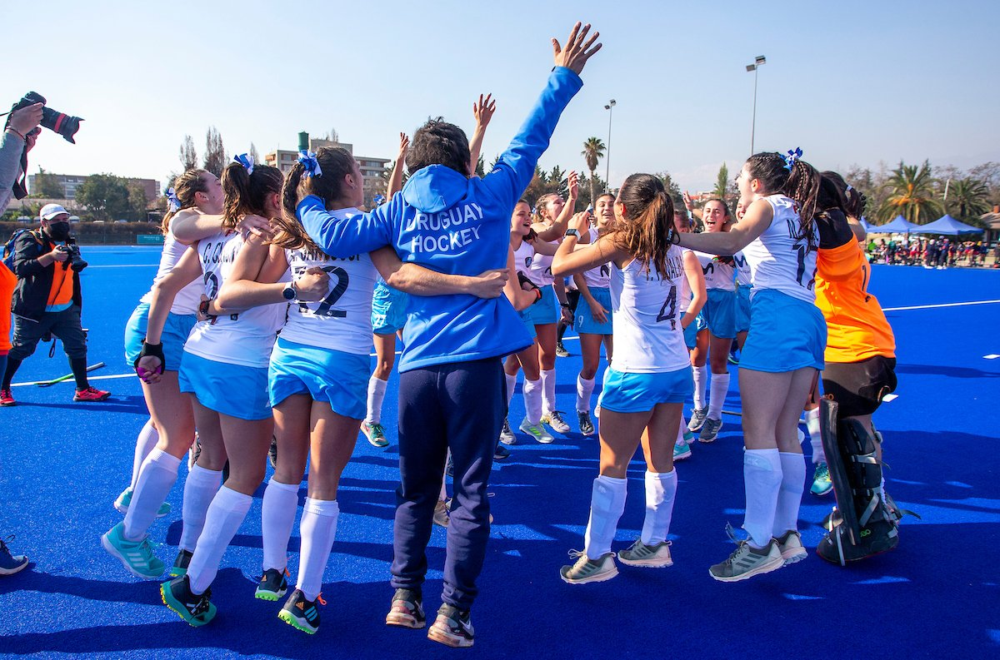
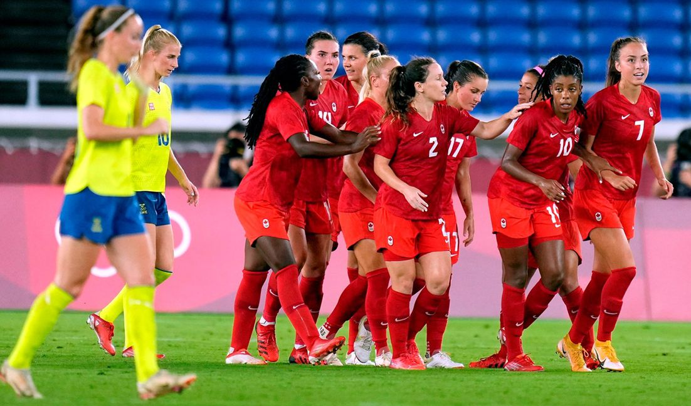
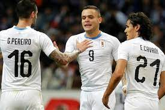
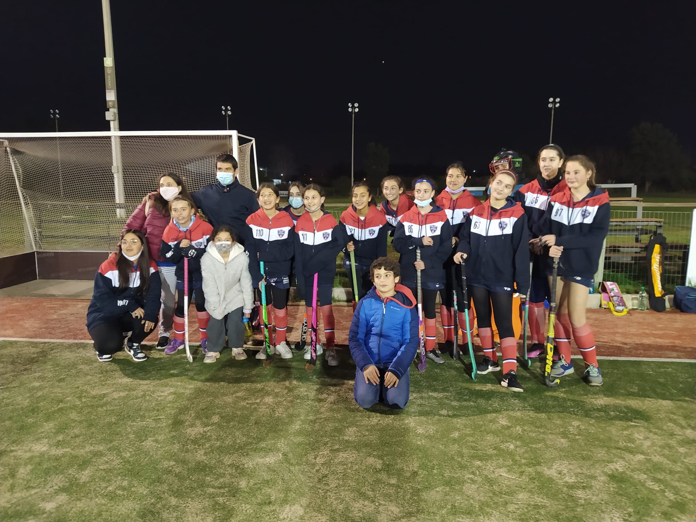

¡ENORMES! URUGUAY CLASIFICÓ AL MUNDIAL
La selección uruguaya femenina junior (sub 21) de hockey sobre césped, derrotó este jueves 1-0 a Estados Unidos
en las semifinales del Panamericano de la categoría que se disputa en Santiago y no solo se clasificaron a la
final sino que también consiguieron el boleto para el Mundial de Sudáfrica, en la primera clasificación
mundialista para Uruguay en este deporte. Uruguay superó el grupo del torneo con dos empates 0-0, primero
contra Canadá, el sábado, y luego contra Argentina, el lunes. La clasificación se selló el martes cuando
Canadá le ganó 1-0 a Argentina.
Estados Unidos es una potencia continental en este deporte. Fueron campeonas junior en México 2008
y una sola vez en la historia (Caracas 2002) no estuvieron en el podio. Uruguay nunca se había podido
clasificar a una semifinal en la era moderna del hockey sobre césped. En este torneo no solo dio ese
salto sino que también logró un golpazo histórico derrotando a Estados Unidos, un rival al que nunca le
había ganado en césped de 11.
COPA ORO DE FÚTBOL FEMENINO
La Concacaf dio un gran y ejemplar paso en la búsqueda de inclusión en el fútbol mundial.
El máximo ente del balompié de América del norte y del centro creó la Copa Oro W,
torneo equivalente a la tradicional Copa Oro masculino.
Según se dio a conocer, el nuevo certamen se disputará a partir de 2024.
Participarán 12 selecciones que se dividirán en grupos de cuatro equipos. Ocho de las selecciones serán miembros de Concacaf
y las cuatro restantes serán invitadas de otras confederaciones. Para determinar los clasificados a este nuevo torneo
se organizará otro nuevo certamen llamado Road to Gold Cup W.
Esta competición dará seis cupos a la nueva Copa Oro y se jugará tras el Mundial de Fútbol Femenino 2023 Australia y Nueva Zelanda
UNA CHANCE PARA EL CABECITA
La selección 'Charrúa' anunció que no podrá contar con los delanteros Edinson Cavani y Luis Suárez.
El Matador no podrá asistir por los estragos generados por la pandemia y el Pistolero por una lesión en la rodilla,
por lo que las posibilidades se abrieron ampliamente para que el 'Cabecita' Rodríguez sea el elegido para dirigir
la ofensiva uruguaya en los partidos eliminatorios mundialistas.
La Celeste lo anunció en sus redes sociales, indicando que los futbolistas se perderán los juegos ante Perú,
Bolivia y Ecuador que se disputarán el 2, 5 y 9 de septiembre, por lo que se abre una gran oportunidad
para Jonathan Rodríguez que, poco a poco ha tenido minutos en las últimas convocatorias con la selección.
QUILMES SUB14 SIGUE SUMANDO
El equipo sub 14 de Quilmes Hockey disputó un nuevo partido del Torneo de la Federación de Hockey sobre césped y
continúan ganando rodaje en este nuevo deporte, cayeron 3-0 pero siguen sumando experiencia.
“Partido que comenzó parejo. Fue un partido de ataques permanentes, lo que ocasionaría que existieran muchas situaciones de gol para ambos equipos,
por lo que las goleras tuvieron mucha actividad;
una distracción de Quilmes pone el 1 a 0 para OBC” explicaron desde el equipo del mercado.
“Hasta el segundo tiempo no se dieron cortos en contra evitando esos peligros que muchas veces terminan en gol,
como sucedió y por esa vía encontraron el segundo.
Quilmes siguió buscando su gol, y los tiros pasaban cerca o eran atajados y no logramos convertir;
fue un partido jugado a un ritmo muy alto y en un contraataque vino el 3er gol de las locales.
Se vuelve a Florida con un equipo que empieza a desarrollar la táctica trabajada, a reconocerse en cancha,
cosa que es muy importantes para los partidos que vienen y el crecimiento del equipo cada día se nota más”.